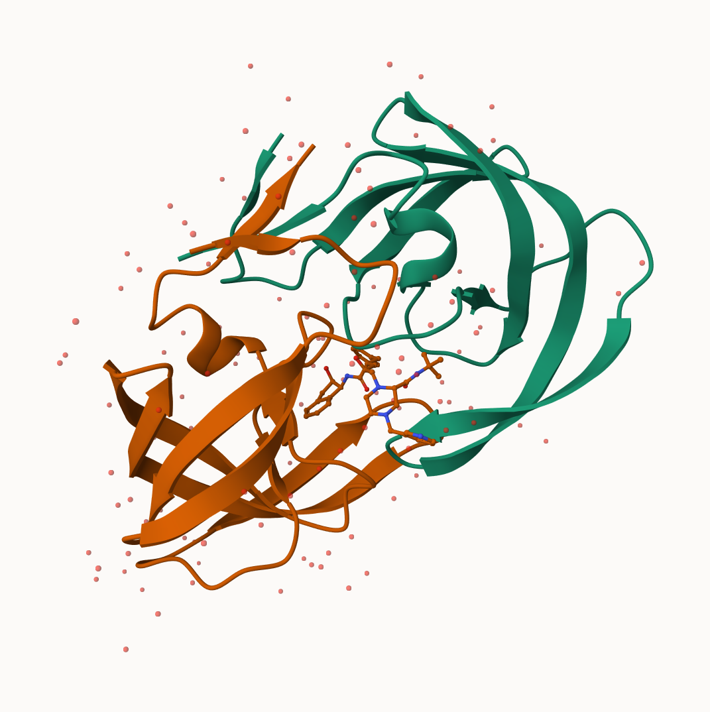
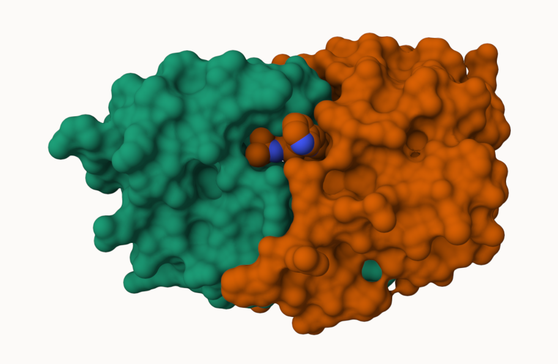
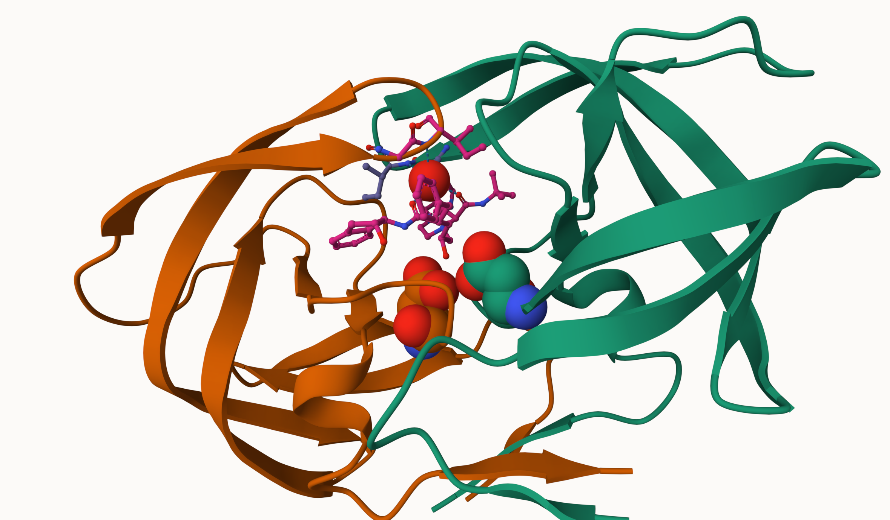

Rows: 6 Columns: 9
── Column specification ────────────────────────────────────────────────────────
Delimiter: ","
chr (1): Molecular Type
dbl (4): Integrative, Multiple methods, Neutron, Other
num (4): X-ray, EM, NMR, Total
ℹ Use `spec()` to retrieve the full column specification for this data.
ℹ Specify the column types or set `show_col_types = FALSE` to quiet this message.
Q1: What percentage of structures in the PDB are solved by X-Ray and Electron Microscopy.
pdb$Total[1]
[1] "217,375"
Q2: What proportion of structures in the PDB are protein?
The total number of protein in th
Key-point We have a very very small structural coverage of known protiens (~0.1%). Most structures we know about (~80%) come from one one method (X-ray crystallograohy).
Visualizing PDB Data
Main stand alone web version wiht all features is at, https://molstar.org/viewer/

The HIV-protease enzyme is a homodimer with two chains

Surface displya showing the binding cleft side for the inhibitor drug molecue

Spacefill display of catalytic ASP25 amino acids and key binding site water molecue